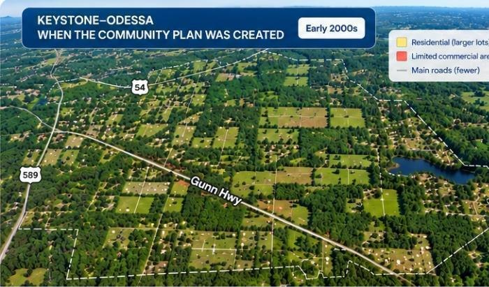
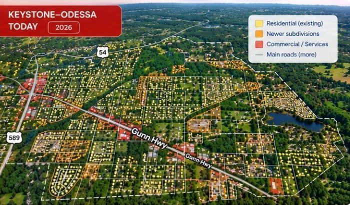
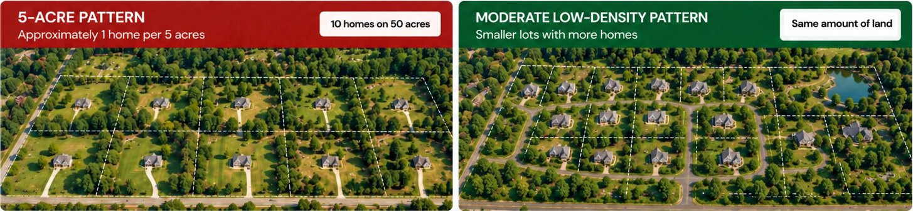
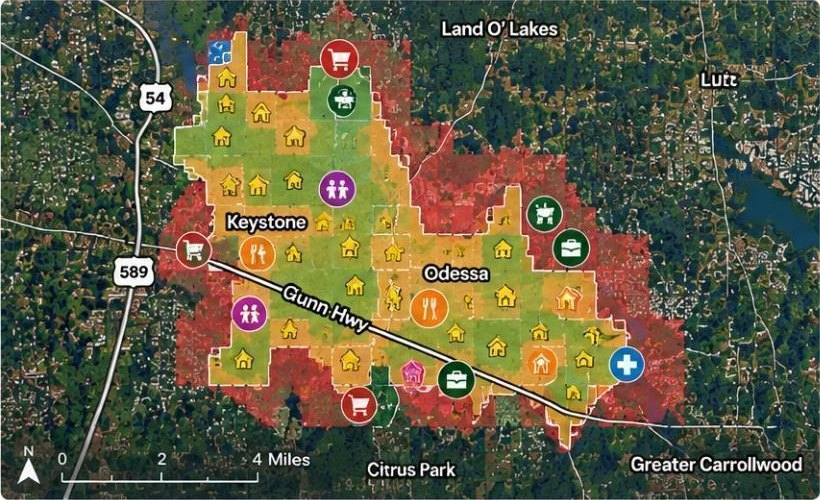
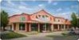
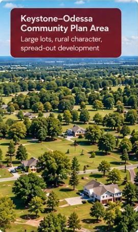
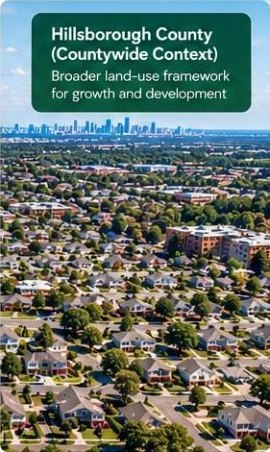
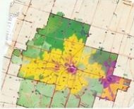

Growth & Daily Life
The community has changed. Planning needs to keep up.
The Keystone–Odessa Community Plan maintains a very-low-density development pattern and limits where many commercial activities can be located and how large they can be. These rules affect housing, distance to services, travel needs, and the ability to provide infrastructure efficiently.
Keystone–Odessa when the Community Plan was createdKeystone–Odessa today


- ~ 4,000Population
- ~ 1,100Housing units
- LimitedRoad network
- FewCommercial areas
- Rural characterMostly large lots and open space
- ~ 7,000+Population
- ~ 2,500+Housing units ↑
- MoreRoad network ↑
- MoreCommercial areas ↑
- Continued low-density patternGrowing subdivisions and more development
Unverified sample data: population and housing counts shown in this design are not verified figures.
02 — Low-density development
Five acres for one home creates a development pattern with wider consequences.
The Community Plan protects very-low-density residential development in the relevant areas, with policies centered around approximately one dwelling unit per five acres and limits on increasing density.

- More land for the same number of households.
- Homes farther apart and a more spread-out development pattern.
- Infrastructure must serve greater distances across a larger area.
- Services farther away from residential areas.
- More trips by car and greater dependence on longer travel distances.
03 — Low density affects housing
Land rules determine what types of housing the community can provide.
Large-lot requirements increase the amount of land needed for each household and limit the number and variety of housing options. The assessment document also identifies potential impacts on younger families, workers, teachers, and seniors.
- 5 acres / home→ more land / household
- Smaller low-density lot→ less land / household
- Countywide framework→ broader planning options
04 — Limited services
Everyday needs still exist even when services are farther away.
The Community Plan concentrates commercial development in certain locations and limits the scale and characteristics of commercial uses in other areas.
People still need: Food · Pharmacy · Healthcare · Childcare · Restaurants · Services · Jobs
When these needs are located farther away from residential areas, people must travel farther to access them.

Key services
Approximate drive times from residential areas
- Grocery Stores10–25 minutes
- Healthcare10–30 minutes
- Childcare10–25 minutes

- Restaurants10–25 minutes
- Employment / Jobs15–30 minutes
These are illustrative image labels, not newly verified local travel-time findings.
05 — Growth and infrastructure need to be planned together
More people means more demand for roads, water, services, and infrastructure.
- 2001
- 2010
- 2020
- 2026
Track at the same time: Population · Housing · Subdivisions · Roads · Water/Wastewater · Services · Traffic
The community changes. Infrastructure and the planning framework must be able to adapt to that change.
The Master Assessment identifies that the gap between actual growth and the Plan’s old assumptions can make it increasingly difficult to provide roads, services, and infrastructure.
06 — Plan comparison
Two Approaches to Growth and Development
The Keystone–Odessa Community Plan and the Hillsborough County Comprehensive Plan take different approaches to growth, land use, and development.

Keystone–Odessa Community Plan
Emphasizes a very-low-density rural pattern.
Land use pattern
Emphasizes a very-low-density rural pattern.
Density policies
Policies of approximately 1 dwelling unit per 5 acres in the relevant areas.
Commercial development
Limits commercial development by location, scale, and rural character.
Flexibility
Limits the ability of the development pattern to adapt as community conditions change.
Hillsborough County Comprehensive Plan
Plans land use within a countywide framework.
Countywide land use framework
Plans land use through a countywide framework that considers growth, development, and infrastructure together.
Land-use and development tools
Provides additional land-use and development tools for evaluating how and where development can occur.
Services and development
Allows service and development needs to be evaluated together with land use and infrastructure.
Growth and infrastructure
Allows growth to be evaluated together with infrastructure capacity and countywide planning standards.

See the Detailed Policy Comparison
This section is only a comparison summary. Detailed policy analysis is reserved for the Full Comparison Page.
07 — Evidence
See the Evidence Behind the Issue
These documents, data, and maps show how the Community Plan affects growth, development, and daily life in Keystone–Odessa.

Infrastructure Records
Roads, utilities, drainage & development